Voici l'outil parfait pour tricher à un examen...
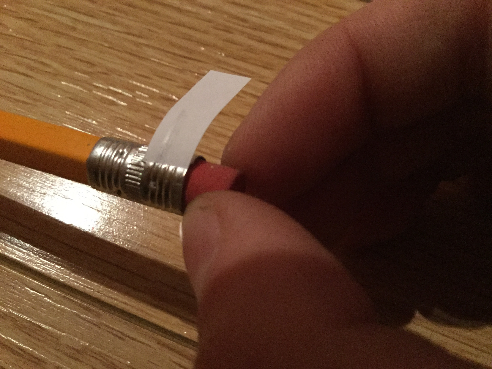
Vous n'avez qu'à tourner l'efface dans le sens horaire pour sortir le papier, et dans le sens inverse pour le cacher !
Avant de passer au tutoriel, je voudrais préciser que tricher lors d'un examen est la pire idée que vous pourriez avoir.
Non seulement vous pourriez vous faire prendre et obtennir un note ronde, mais en trichant, vous n'apprenez rien.
1. Voici le matériel que vous aurez besoin pour faire le projet. Une retaille de papier, une paire de ciseaux et, bien sûr, un crayon avec son efface.
Vous pouvez trouver tout ceci dans votre étuit à crayons.
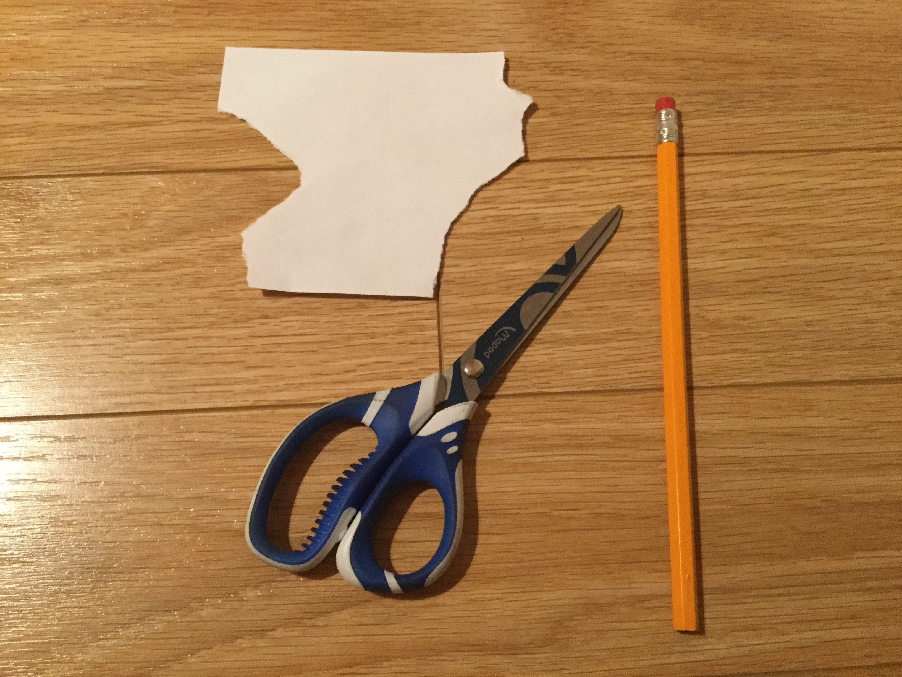
2. Premièrement, enlevez délicatement l'efface du crayon pour éviter de la briser en deux.
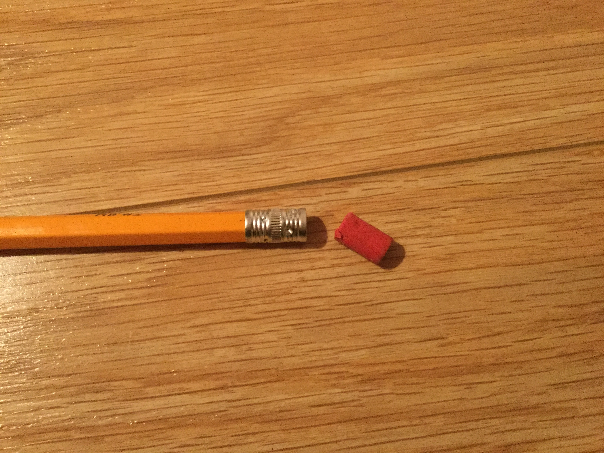
3. Deuxièmement, faites une entaille dans l'efface avec les ciseaux, comme ci-dessous.
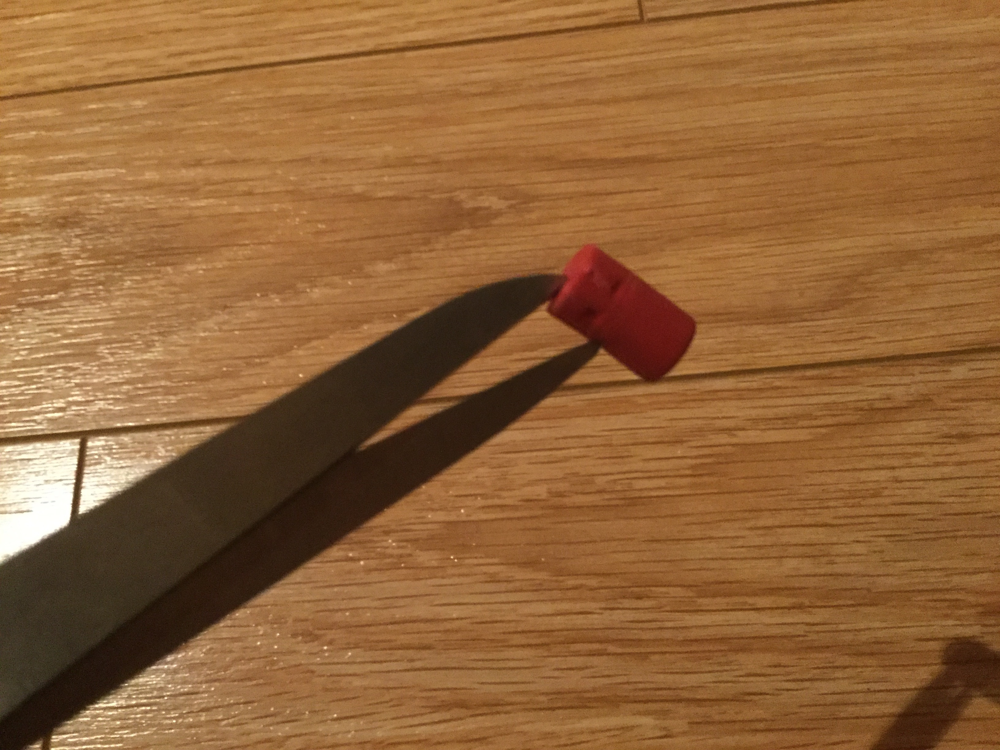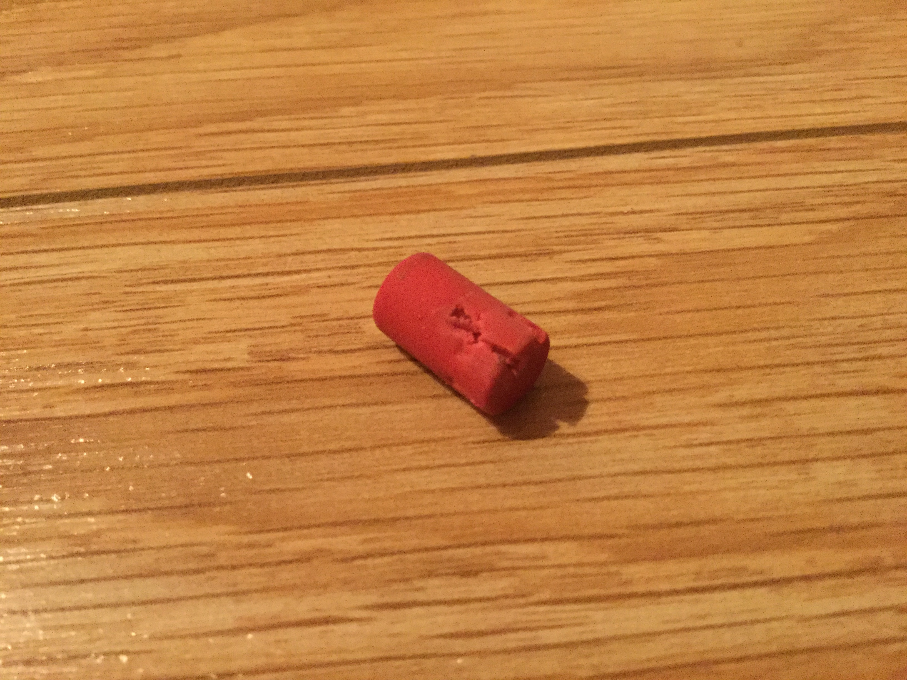
4. Ensuite, vous devez applanir les bouts de métal qui tenaient l'efface en place avec des ciseaux.
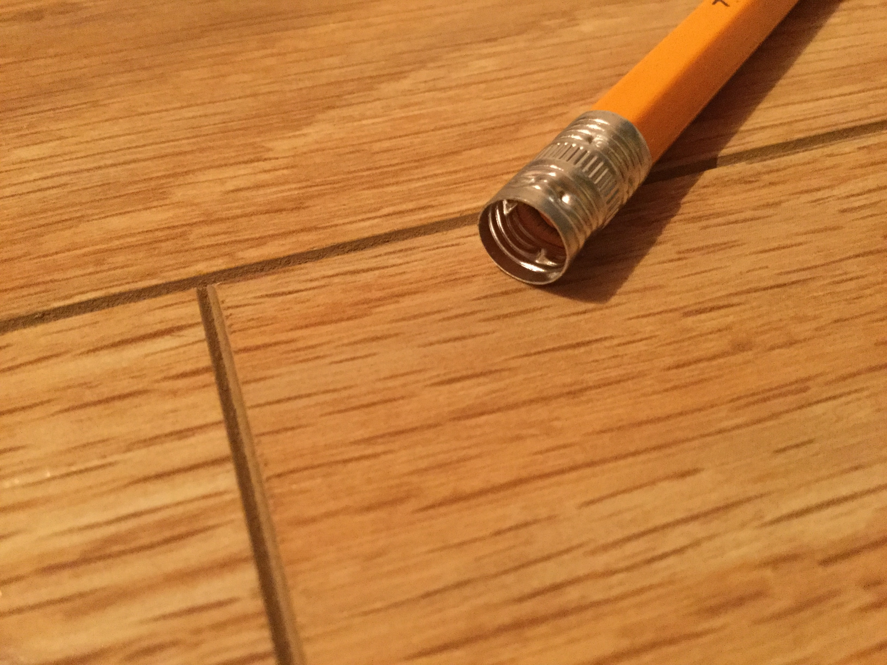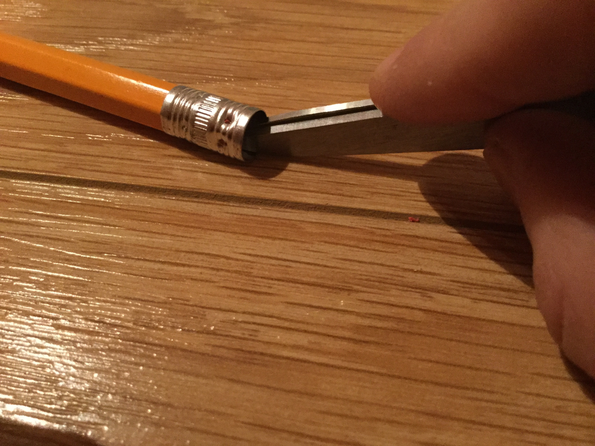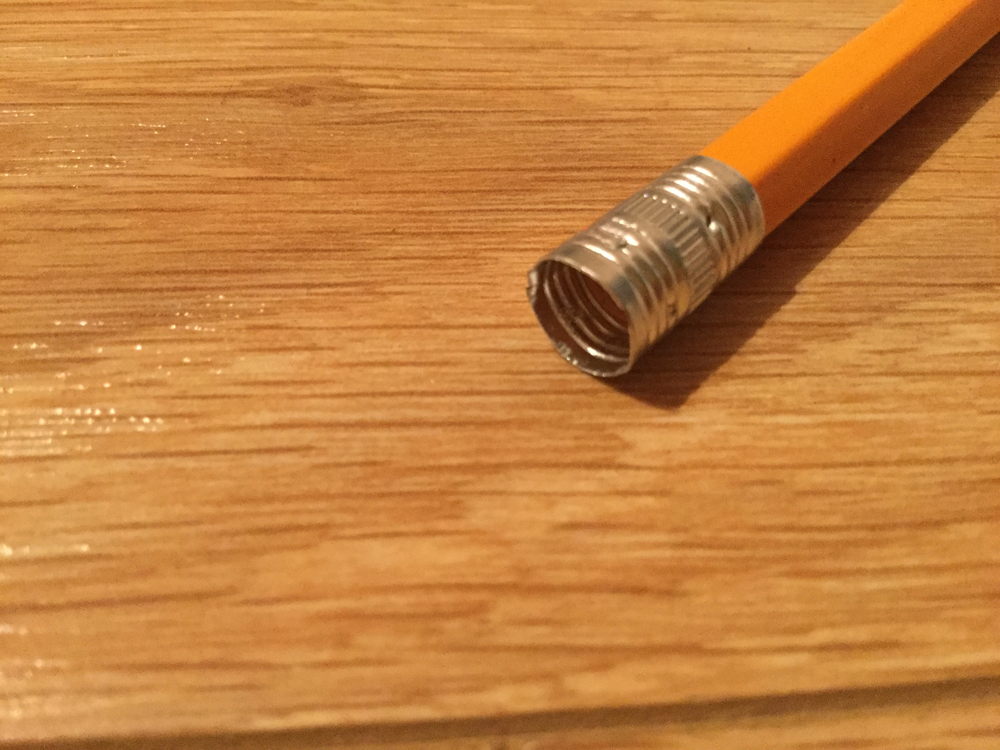
5. Faites une entaille dans le morceau de métal du crayon. La partie de gauche doit être plus à l'extérieur que celle de droite.
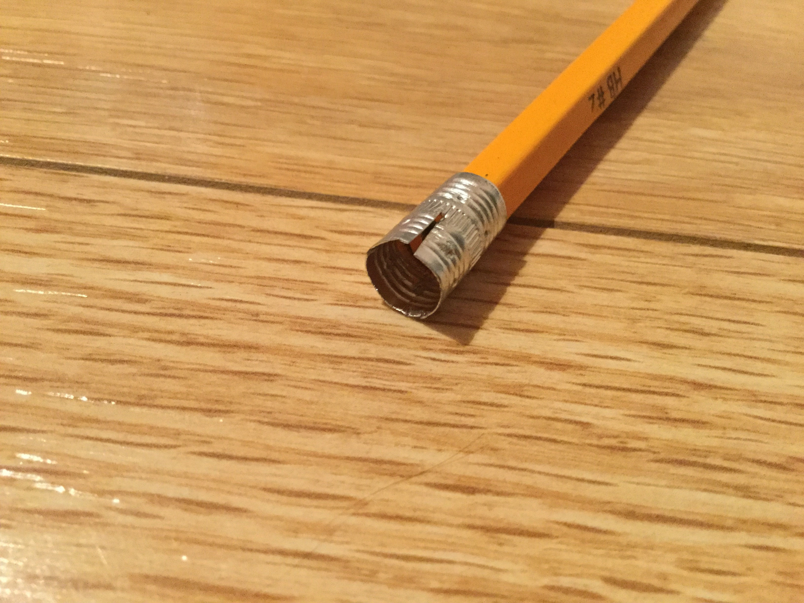
6. Coupez ensuite un morceau de papier de 0,5 cm par environ 5 cm que vous allez alors insérer dans le sillon de l'efface.
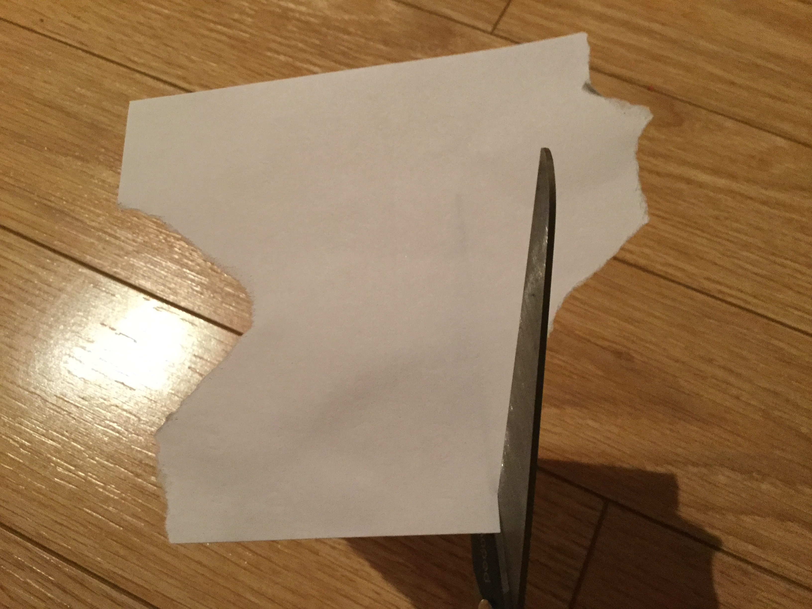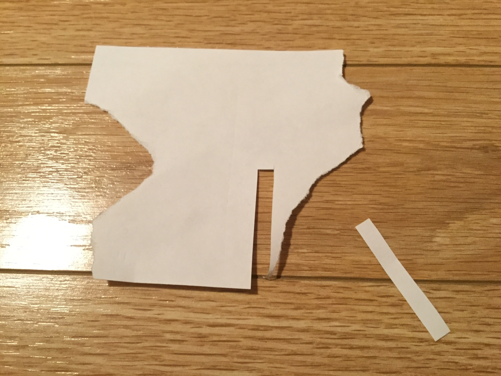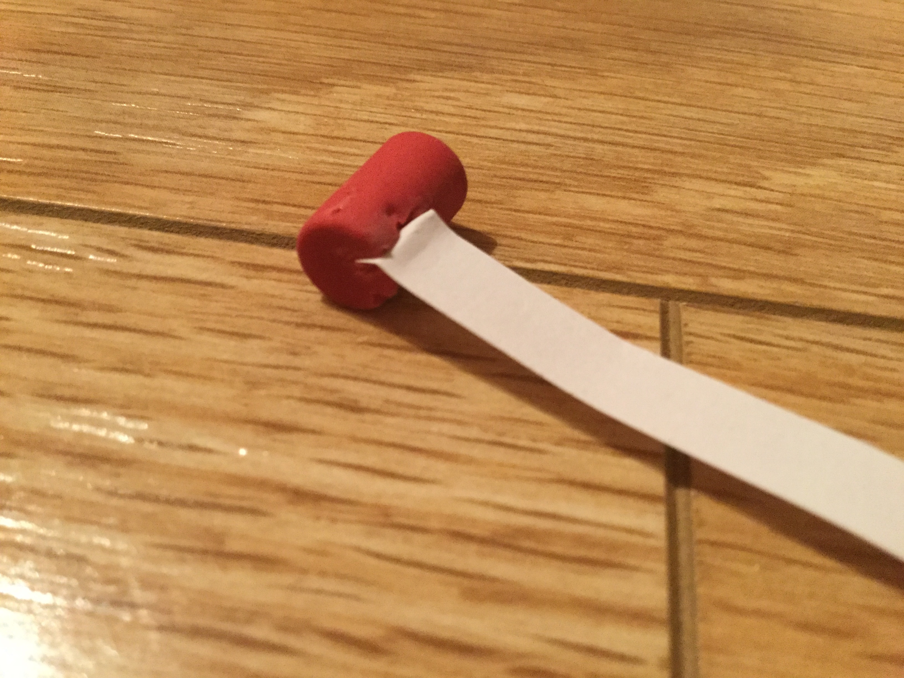
7. Insérez l'efface dans la partie de métal au bout du crayon en laissant passer le papier par l'entaille. Tournez ensuite l'efface dans le sens anti-horaire pour cacher le morceau de papier.
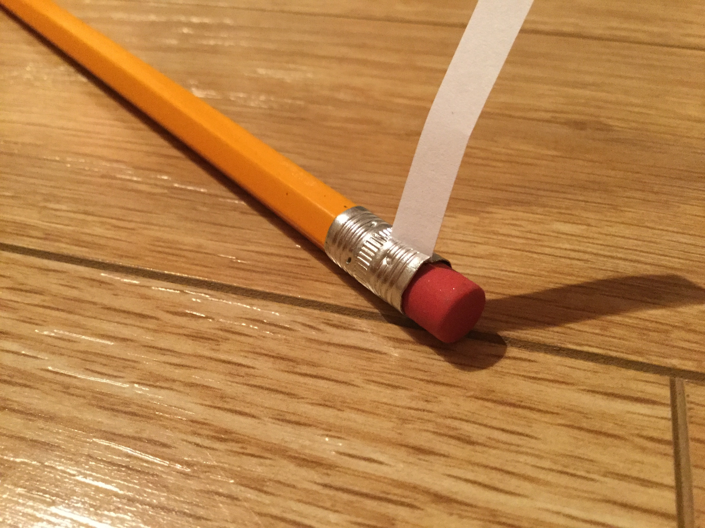
Le projet est terminé, et vous avez maintenant un crayon pour tricher dans les examens les plus difficiles !